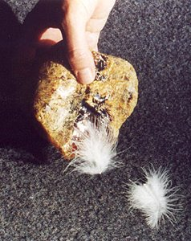

Primele observaţii ale separării electronilor de atomi au fost consemnate în Grecia antică, acum mai bine de două milenii. Frecând chihlimbarul (o răşină fosilă) cu o ţesătură, acesta dobândea proprietatea surprinzătoare de a atrage firele ţesăturii sau alte corpuri uşoare (figura 1).
|  | Figura 1. Frecată cu o ţesătură, o bucată de chihlimbar atrage corpuri uşoare. |
Chihlimbarul era numit în greaca veche electron. Pornind de la acest cuvânt, s−a creat în timp o întreagă familie de cuvinte care să descrie diferite aspecte ale interacţiunilor asemenea celor observate pentru prima dată în cazul chihlimbarului.